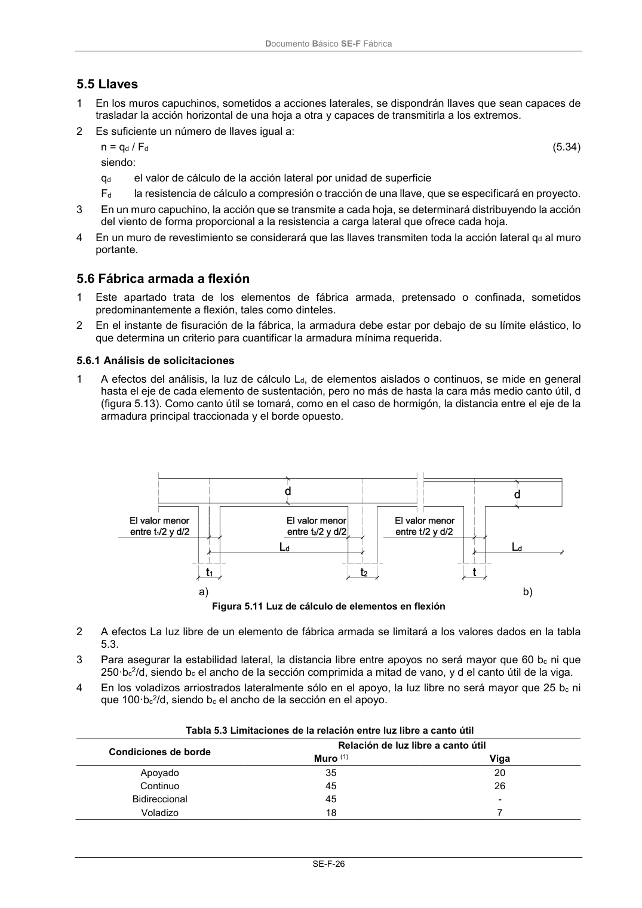

DB-SE-F · 5.5 Llaves · versión 2019-12-20 · capa oficial
Formatos: JSON compacto · Markdown · PDF fuente
Ámbito del documento · texto del ámbito · documento y tablas
ID técnico a0065 · PDF pág. 30 · jerarquía no validada por persona · contrastado con el literal de la página 30 (candidato tipográfico); no validado por persona · padre: raíz
5.5 Llaves 1 En los muros capuchinos, sometidos a acciones laterales, se dispondrán llaves que sean capaces de trasladar la acción horizontal de una hoja a otra y capaces de transmitirla a los extremos. 2 Es suficiente un número de llaves igual a: n = qd / Fd (5.34) siendo: qd el valor de cálculo de la acción lateral por unidad de superficie Fd la resistencia de cálculo a compresión o tracción de una llave, que se especificará en proyecto. 3 En un muro capuchino, la acción que se transmite a cada hoja, se determinará distribuyendo la acción del viento de forma proporcional a la resistencia a carga lateral que ofrece cada hoja. 4 En un muro de revestimiento se considerará que las llaves transmiten toda la acción lateral qd al muro portante.

PDF fuente redistribuible: copia fiel enlazada en esta página (SHA256 verificado).